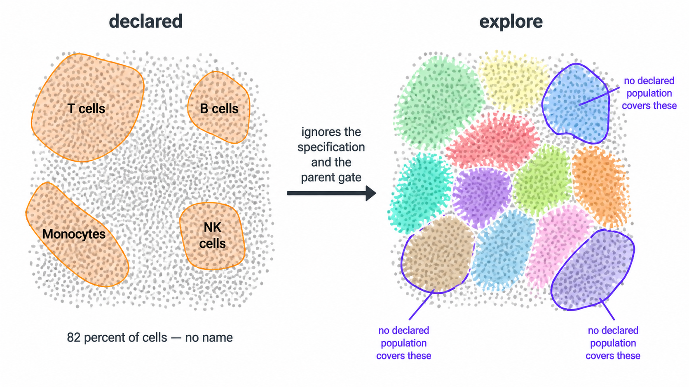

Unsupervised discovery, run beside the declared analysis or on its own.
The rest of cyRAVEN starts from a specification: you declare populations, it scores them, and six diagnostics try to break the declaration. That design has one structural limit. It cannot find a population nobody declared, and it cannot look outside the parent gate, because both are consequences of the declaration itself.
Explore mode is the complement. It takes every event in the file and every eligible channel, embeds and clusters without reference to any specification, and reports what it found. It is what FlowSOM, Phenograph and cyCONDOR do.
Everything it writes lands in <outdir>/explore/.
No existing output changes.
1. Why run it here rather than in a clustering package
An unsupervised tool hands you cluster 17 and a heatmap, and you decide what it is by eye. That inference is done on pooled data, on a colour scale whose limits you chose, with no per-sample calibration behind it.

With --maybe-learn, this module has things a standalone
clusterer does not:
| From the declared run | What explore does with it |
|---|---|
| The transform, cofactor estimated on this panel | Clusters on the same scale the gates were drawn on, instead of an assumed default |
| A threshold for every marker in every sample | Names each cluster from the fraction of its cells above that sample’s own cut |
| Staining QC verdicts | Records them per cell, without excluding. See section 5 |
| The batch/group confounding verdict | Carries it into the cluster statistics, so a q-value cannot be read without it |
The result is a phenotype with a measurement behind it:
CD19+ HLA-DR+ CD3- CD14-, where every call is a percentage
of cells above their own sample’s threshold, rather than a colour you
interpreted.
Run without --maybe-learn, explore is deliberately
blind: it sees the transform and the group labels and nothing else, and
names its clusters from pooled medians. That is the right default, and
section 6 explains why.
2. The three ways to run it
Alongside the declared analysis
docker run --rm -v "$PWD/data:/data:ro" -v "$PWD/results:/results" \
cyraven:1.0.0 --dir /data/fcs \
--samples /data/samples.csv --config /data/panel.yaml \
--group-column cohort --reference-group "Healthy controls" \
--cluster --explore --outdir /resultsBoth analyses run. The declared deliverables are byte-identical to a
run without the flag; explore’s outputs are in
results/explore/.
Standalone, with no specification at all
docker run --rm -v "$PWD/data:/data:ro" -v "$PWD/results:/results" \
cyraven:1.0.0 --dir /data/fcs --explore-only --outdir /resultsNo --config, no --samples, no populations.
Just a folder of FCS files. This is the mode for a panel you have not
written a specification for yet, and
explore_suggested_spec.yaml is where you get a first draft
of one.
3. What it clusters on
Every eligible channel, including scatter and viability. No lineage preference, no exclusions. That is the unsupervised default and it is deliberate: it is what lets the QC gate find debris (CD45 low), dead cells (viability high) and granulocytes (side scatter high, identified by no antibody in most panels).
The cost is real and worth stating: some clusters will split on scatter rather than on lineage. If that is not what you want:
4. The quality gate
cyRAVEN’s declared path starts by gating CD45-positive leukocytes. Explore mode cannot: a declared parent gate is exactly what it is meant to work without.
So it uses the cluster-level gate the unsupervised family uses. Cluster coarsely first, then judge whole clusters by their marker profile, so no per-event cutoff is invented:
| Call | Rule |
|---|---|
debris |
Leukocyte marker low across the cluster |
dead |
Viability dye high across the cluster |
saturated |
Top percentile in most channels at once. No real cell type is, so these are aggregates and doublets |
Saturation is decided first: an aggregate is bright in the leukocyte marker too, so calling it debris would mislabel it.
Under --maybe-learn the debris and dead calls are made
against each sample’s own thresholds. Without it they come from 2-means
on the per-cluster medians, which is what a standalone tool has. Either
way explore_qc_clusters.csv records the call and
the basis for it per cluster.
If the gate would keep less than --explore-min-retained
(default 5%), it is ignored and the run flagged: at that point the
markers are more likely mis-named than the data bad.
5. Two things it does that the declared path cannot
It keeps the samples staining QC excluded. A sample
with no resolvable CD45 mode has no usable parent gate, so the declared
path must drop it: every percentage would be a fraction of an arbitrary
slice. Explore does not depend on that gate, so those samples still
contribute, and staining_qc_verdict is a column rather than
a filter. On a cohort where three samples failed, that is three donors
you can still say something about.
It looks outside the parent gate. Anything the CD45 gate excluded is invisible to the declared analysis by construction. Explore embeds it.
6. --maybe-learn, and why it is off by default
Without the flag the two analyses are computed in complete isolation. That is not caution for its own sake:
- An explore run that used the declared thresholds is no longer a blind unsupervised run. If you want to compare cyRAVEN’s clusters against another tool’s, or check whether the specification is any good, the check has to be independent of the thing being checked.
- A declared run carrying a diagnostic derived from clusters is no longer the run its manifest describes.
With the flag, both directions open:
Declared to explore. Per-sample thresholds name the clusters, QC verdicts are recorded, the confounding verdict is attached to the statistics, and the bridge tables against the declared populations are written.
Explore to declared. One file appears in the run
directory: spec_gaps.csv, with two kinds of row.
issue |
Meaning |
|---|---|
population spans several clusters |
The declared label lumps distinct phenotypes. Its total can be flat while a subset inside it moves |
cluster no declared population covers |
Something in the blood nobody declared |
The first row type is the one worth the flag. A declared population whose total does not differ between groups, while a cluster inside it does, is invisible to any amount of testing on the declared table, and it is a real pattern, not a hypothetical.
7. What it writes
All in <outdir>/explore/.
| File | Content |
|---|---|
explore_report.html |
Start here. Self-contained, every figure and table embedded |
explore_cluster_profile.csv |
Per cluster: size, phenotype string, fraction positive and median per channel |
explore_qc_clusters.csv |
The gate: call and basis per coarse cluster |
explore_cluster_abundance.csv |
Per donor per cluster, with counting uncertainty and LOD/LOQ |
explore_cluster_stats.csv |
Group tests, donor-level, with the confounding verdict attached |
explore_cells.csv |
One row per cell: sample, event index, cluster, UMAP coordinates |
explore_vs_populations.csv |
Cross-tab against the declared labels |
explore_findings.csv |
Clusters no declared population covers |
explore_population_split.csv |
Declared labels spanning several clusters |
explore_suggested_spec.yaml |
A draft specification, for curation |
explore_provenance.csv |
Every choice made, and on what basis |
Figures: explore_umap_clusters.png,
explore_cluster_heatmap.png,
explore_umap_by_group.png,
explore_umap_markers.png, and
explore_marker_umaps_by_group/, one panel per group per
marker, on the shared embedding.
The report is separate from report.html rather than a
section inside it, for the reason in section 8: report.html
is a declared deliverable and --explore must not change
it.
The heatmap is fractions, not medians
explore_cluster_heatmap.png plots the fraction
of each cluster positive for each marker, not the median
expression. A median is a number on a transformed scale whose apparent
meaning depends on the colour limits you chose. A fraction positive is
“this share of the cluster is above its own sample’s cut”, which is the
same quantity a person reads a gate for.
8. The isolation guarantee
--explore must not alter a single byte of the declared
deliverables. That is tested rather than asserted: the demonstration
cohort is run with and without the flag and every top-level output
compared byte-for-byte, excluding only run_manifest.txt and
report.html, which embed a timestamp.
The two new tables in section 9 are the one intended change, and they appear on every run, with or without explore.
spec_gaps.csv is the only file explore is ever allowed
to add to the declared output, and only under
--maybe-learn.
9. The statistics catalogue
Two files now appear in the normal output on every run, and they exist because a reader arriving from an immunophenotyping paper expects t-tests and ANOVA and finds rank tests instead.
statistical_methods.csv lists every
commonly reported method: Student’s and Welch’s t, one-way and
two-way ANOVA with Tukey, repeated measures, Mann-Whitney,
Kruskal-Wallis with Dunn, chi-squared, Bonferroni, and the
cytometry-specific diffcyt family (edgeR, limma-voom, GLMM), and for
each one says whether this run computed it and why.
normality_tests.csv carries the
evidence: a Shapiro-Wilk test per population per group, and a
Brown-Forsythe test for equal variances across groups. Those are the two
assumptions a t-test or ANOVA rests on.
What it will usually show, and the reason the
interpretation column exists: Shapiro-Wilk on 4 to 10
donors has almost no power, so a non-significant result is
not evidence of normality. That is itself the argument
for the rank test, and the table says so rather than leaving a reader to
conclude “p > 0.05, so a t-test would have been fine”.
What deliberately does not happen: running every test and reporting all the p-values. At these group sizes that is p-hacking with extra steps.
10. Options
| Option | Default | Effect |
|---|---|---|
--explore |
off | Run explore alongside the declared analysis |
--explore-only |
off | Run only explore; no specification needed |
--maybe-learn |
off | Let the two analyses inform each other, both ways |
--explore-k |
20 | Metaclusters |
--explore-qc-k |
20 | Clusters for the coarse QC gate |
--explore-grid |
10 | SOM grid side |
--explore-cells-per-sample |
6000 | Cells drawn per sample before the gate |
--explore-max-cells |
150000 | Ceiling across all samples |
--explore-markers |
every channel | Cluster on these only |
--explore-exclude |
none | Drop these channels |
--no-explore-qc |
off | Embed every event, debris included |
--explore-keep-dead |
off | Keep the dead cluster |
--no-explore-equalise |
off | Keep every gated cell instead of equalising per sample |
--explore-min-retained |
0.05 | Ignore the gate below this retention and flag the run |
--no-explore-spec |
off | Skip the draft specification |
11. What explore mode is not
It is a hypothesis generator. A cluster is not a population until it has been declared, thresholded per sample, and checked.
The intended path is a loop: explore finds something to you curate
explore_suggested_spec.yaml into a real specification to
the supervised path scores it with per-sample thresholds, propagated
uncertainty and the six specification checks to and if it survives,
--explain-clusters and --export-gates turn it
into gate geometry a sorter can be driven with.
Discovery is the beginning of that loop, not the end of it.
See also
- Running cyRAVEN: every command, and which to use when
- Diagnostics: the checks in reading order
- Statistics: why the donor is the unit of replication
- Interoperability: handing a cyCONDOR clustering to cyRAVEN